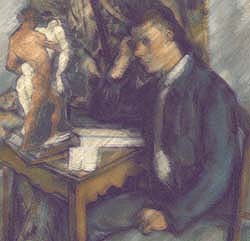

|
Cezanne:
I remember being a boy, struggling to be or not
a painter of, what? Dead myth, passion
and the needs of flesh, or the fact
that in the end it all decays? These thoughts
are cause for endless debate in the cafes.
But the painting endures, or we flatter ourselves
it can, so I must carefully consider what I put
in the frame. Pisarro guides my eye to the world
outside, its changing light, its meditative embrace.
|
 |